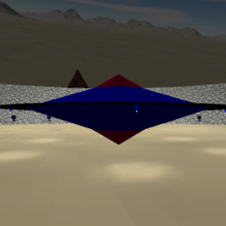
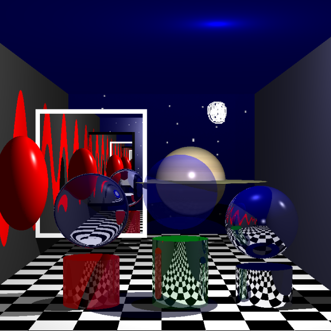
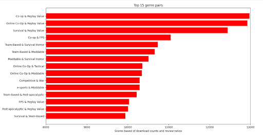
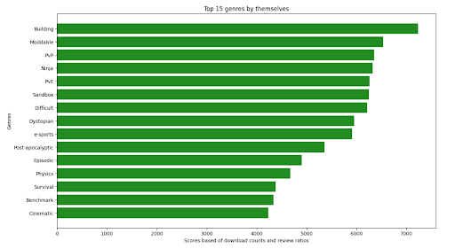

Projects 2024
Once upon a time, in the eccentric realm of digital whimsy, a pixelated giraffe named Chatrick roamed freely through the virtual savannah of ones and zeros. Chatrick, with a top hat made of cascading lines of code, embarked on a quest to find the legendary HTMLicorn, a mythical creature rumored to have a mane woven from cascading style sheets. With a sense of accomplishment and a backpack full of cloud tokens, Chatrick descended from the Cloud Canopy, returning to the familiar landscapes of HTML valleys and CSS hills. As the pixelated giraffe ventured back into the ever-expanding digital horizon, it carried the tales of cloud adventures, quantum coding, and the transcendence of web boundaries. And so, the saga of Chatrick continued, weaving a tapestry of digital enchantment in the ever-evolving web realm.
-
This portfolio website
Built from scratch. Front end html, css and javascript
Working on a game
A multiplayer tower defense versus game
-
Alien world scene
Using c++ and open gl to create a scene including moving spot ligths, animation and everything created from geom
Ray casting
Implemented a ray tracer that can handle diffirent geomertry and illumination features
 -
Steam genere's analysis
With the use of python librarays such as dask and maxiumizing parralelsim to process steam datasets. Below are resulst for pc games top performing genres on there own and top performing genere combos.
 analysis